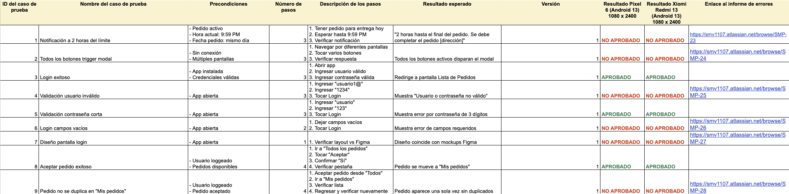
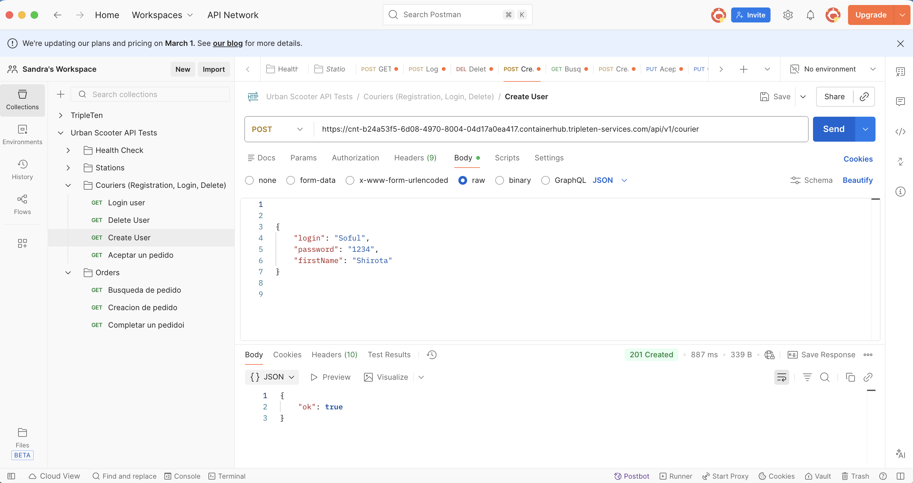
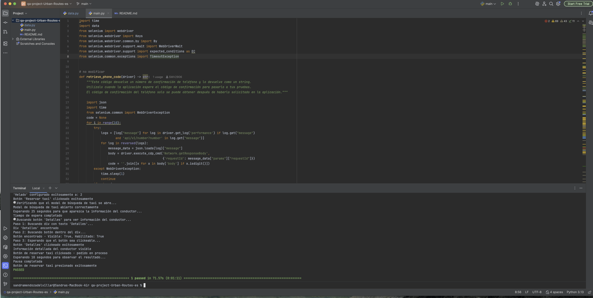
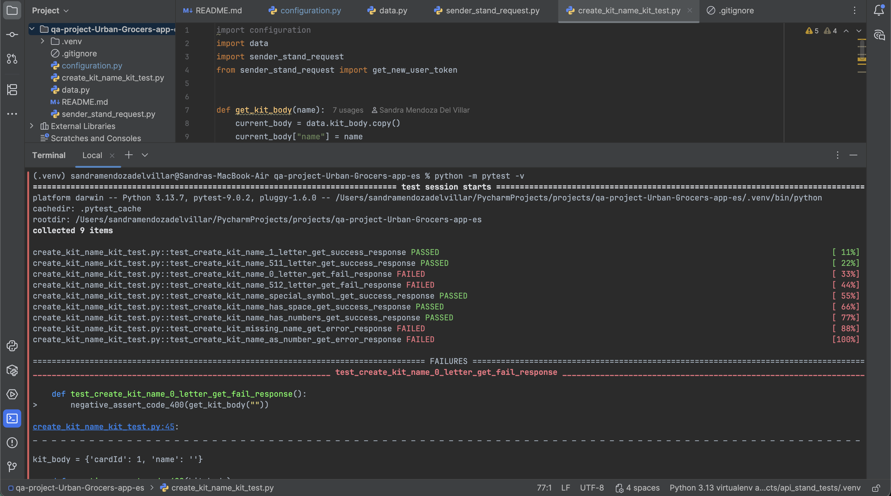
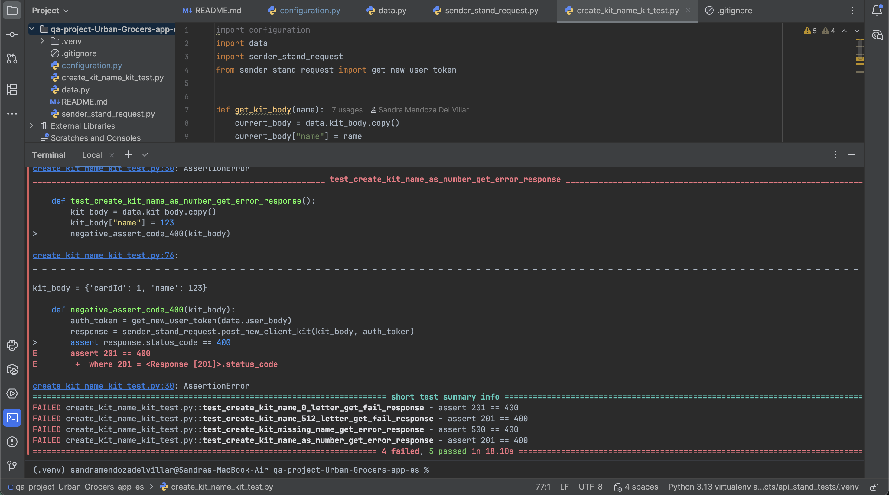
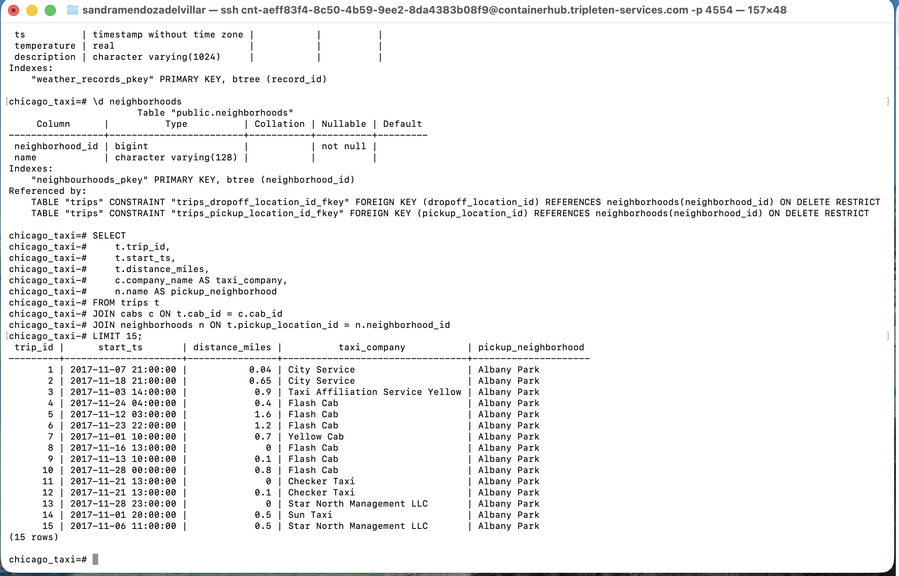
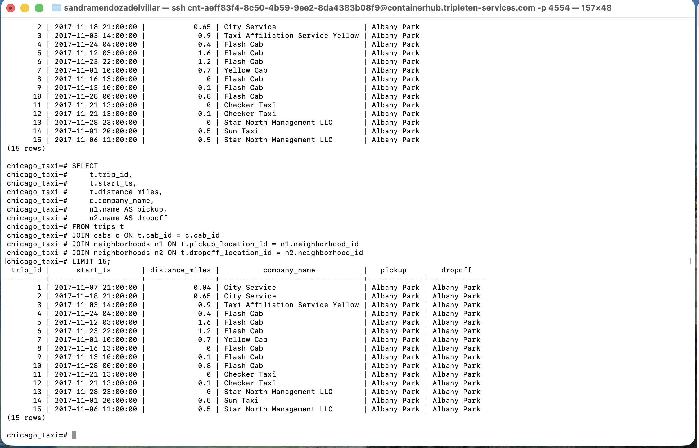
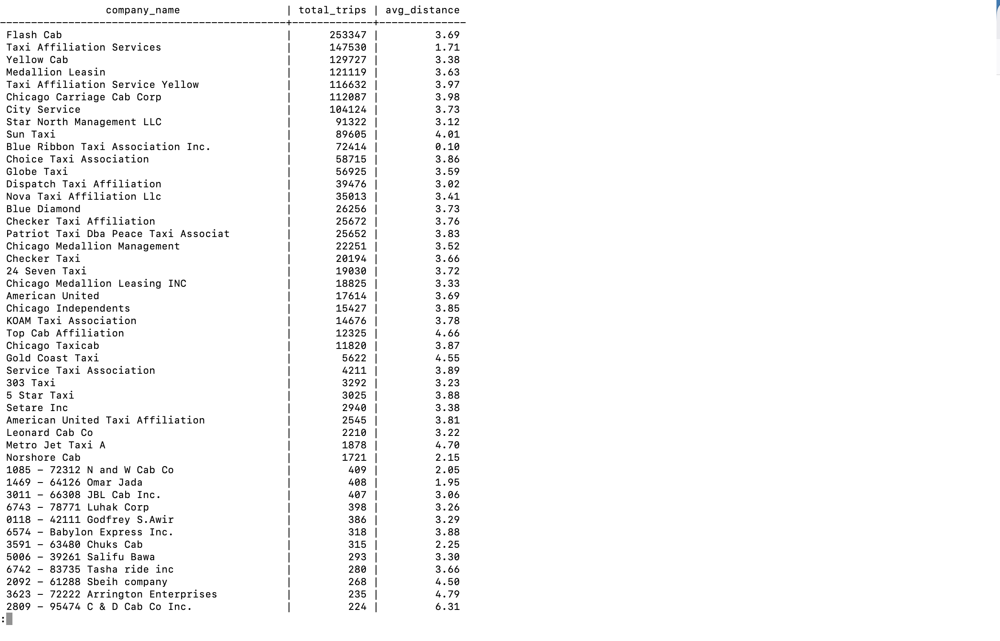
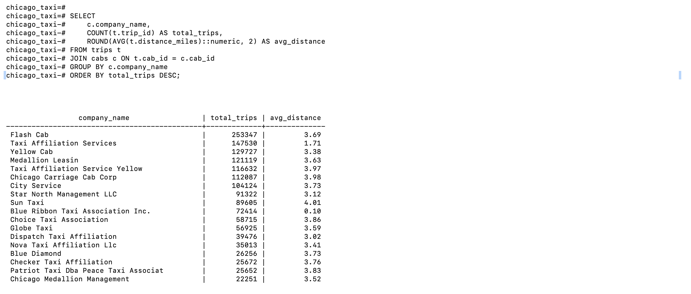

QA ENGINEER · PRUEBAS MANUALES · AUTOMATIZACIÓN · API TESTING
"La calidad no se controla al final: se construye desde el origen."
Soy Ingeniera de QA con una trayectoria única que combina 5 años de experiencia en operaciones logísticas B2B para e-commerce (Amazon, Mercado Libre) con una sólida formación técnica en un bootcamp intensivo de TripleTen.
Mi enfoque de calidad está moldeado por mi pasado en logística de última milla, donde aprendí que anticipar fallos operativos es la clave para garantizar la satisfacción del cliente. Hoy aplico esa misma mentalidad preventiva y pensamiento sistémico al aseguramiento de calidad de software. No me limito a ejecutar pruebas: investigo la causa raíz de los defectos, cuestiono supuestos y diseño escenarios que protegen la experiencia del usuario final y el negocio.
Proyecto: Control de Calidad para una Aplicación de Servicios
Ejecuté un ciclo completo de pruebas manuales para validar las funcionalidades críticas de una aplicación, su versión móvil y su API backend, asegurando la calidad en todos los puntos de contacto con el usuario.


📊 Ver casos de prueba detallados: Hoja de cálculo - Urban Scooter
Aptitudes: Pruebas Manuales | Postman | JIRA | UI Testing | Android Studio
Proyecto: Automatización de App Web tipo "Uber" con Selenium
Desarrollé un framework de pruebas automatizadas con Selenium WebDriver y Pytest para validar el flujo completo de solicitud de un viaje, implementando el patrón Page Object Model (POM) para asegurar la mantenibilidad del código.

Aptitudes: Selenium WebDriver | Python | Pytest | Page Object Model (POM) | Git/GitHub
Proyecto: Automatización de API para Servicio de Kits de Cocina
Automaticé pruebas para una API RESTful de e-commerce, creando y validando kits de productos bajo condiciones específicas, utilizando la librería Requests de Python y Pytest.


Aptitudes: Python | Pytest | Requests Library | API Testing | JSON | Git/GitHub
Proyecto: Depuración Backend para un Sistema de Taxis
Realicé análisis de la base de datos de una aplicación para investigar bugs, combinando el uso de comandos de terminal (CLI/Bash) para filtrar logs con consultas SQL avanzadas (JOINs, subconsultas) en un diagrama Entidad-Relación, rastreando el origen de los datos.




Aptitudes: SQL (JOINs) | Diagramas ER | Terminal/CLI (Bash) | Depuración Backend
Gracias por tomarte el tiempo de visitar mi portafolio.
Estoy en búsqueda activa de oportunidades como QA Engineer (Manual o Automatización Junior) donde pueda aportar mi combinación única de rigor técnico, visión operativa del negocio y pasión por la calidad.
✨ ¡Conversemos! Estoy lista para sumarme a tu equipo.